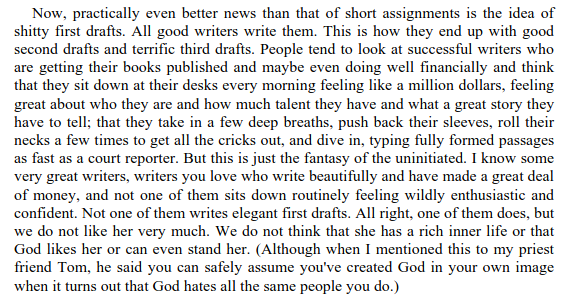

Welcome to coveredinbees, a site where I waffle, mull, connect and maybe over time try to hone thoughts into something more digestible.
You’ve got the option of subscribing to first drafts here, as well as final drafts (RSS links).
The email subscription option defaults to final pieces only - tick the ‘1st draft’ box you want in on the 1st drafts.
Why on Earth would I be giving you the option to read 1st drafts? Isn’t life short enough already? Brief answer followed by longer ramble.
- I’m using “1st draft” here to mean: the start of an idea or topic, in a post that I’ll continue to edit, ramble in, add links and connected thoughts, keeping it all in one place and regularly pushing to github.
- *In “1st drafts” I’ll try and lay out what I think the questions are and get some first points down. These may just be snippets that never go anywhere or they may grow. Though it absolutely will include shitty first drafts along the way, the point is to get stuff out there, experiment with it and let it grow.
- This is also part of having more control and ownership as well as using a structure that leaves an accountability trail by being as open as possible. Everything here is on my own machine as well as stored on Github (admittedly, owned by Microsoft). If anyone so desires - why would you, that’d be mad, but if you wanted to- you could look at the history of any file (here’s this one’s) and see what’s changed (e.g. a recent commit difference). You could even sign up to github and add comments.1
OK, the longer version.
Words have been getting a bit of a kicking lately. Looming in everyone’s vision right now is (as a few people have put it e.g. here, here, here) that humans just lost their monopoly on written language to robots that digested everything ever written, Johnny-5 style (OK, not like that).
But while everyone argues about just how radical the LLM shift is, the machinery of language has been moving around us for a good while longer as informatics has worked its way into every cell over the last few decades2.
It’s obvious to state, but words are the sinews of social and scientific progress. Informatics is upending a lot of the ways it can grow, and it’s opened us up to language equivalents of distributed denial of service attacks - nothing more sophisticated, really, than a bunch of people constantly shouting nonsense while others are in the room trying to think. But it’s been effective nonetheless (climate example in Nature), and LLMs may be pouring petrol on that (see e.g. openAI here, here, also here).
Science (and all other kinds of knowledge that tend to accrete around universities) is a still-surviving modernist structure built up layer by layer through argument and counter-argument3, a somehow-functioning mix of reason and chance. It’s also struggling. Again, it’s a mix of the fundamentals - how knowledge production is adapting to new tech, or through inertia failing to, and all the various ways language DDOS is also affecting it (climate science under attack; ‘sick of experts’; in the U.S., direct authoritarian attacks).
It’s unavoidably political, of course. Authoritarians like to decide what ‘truth’ is
has a lot of weird Venn diagram overlap with its apparent opposite, libertarian truth (another case where political compasses point in directions that eventually meet on the other side of the planet) The absolutist position best seen in Peter Thiel / person who said DISC
Same with Musk’s take on ‘emergent intelligence’, and makes exactly the same wilful error that Hayekian thinking does - if you tear apart existing structures, some kind of fairy dust will emerge

Footnotes
Not quite as ridiculous as it sounds - github is one of the few collab platforms I’ve found that works across both universities and UK public bodies, where often many websites are blocked (I presume because it’s Microsoft owned).↩︎
Informatics is strictly: “The branch of study that deals with the structure, properties, and communication of information and with means of storing or processing information” (OED def) so it’s wrong, but short. All other options are horrible e.g. information ecosystem was about the best I could find, not great. Anything better?↩︎
A Bauman point, that one: modernism - “a ‘total’ order to be erected floor by floor in a protracted, consistent, purpose-guided effort of labour.” (Liquid modernity)↩︎
{kind=link}